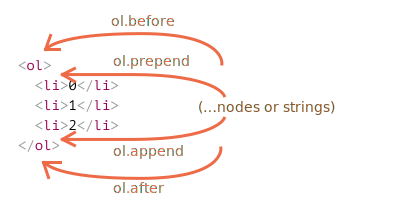
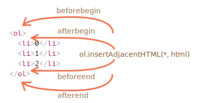

DOM 修改是创建“实时”页面的关键。
在这里，我们将会看到如何“即时”创建新元素并修改现有页面内容。
让我们使用一个示例进行演示。我们将在页面上添加一条比 alert 更好看的消息。
它的外观如下：
<style>
.alert {
padding: 15px;
border: 1px solid #d6e9c6;
border-radius: 4px;
color: #3c763d;
background-color: #dff0d8;
}
</style>
<div class="alert">
<strong>Hi there!</strong> You've read an important message.
</div>
这是一个 HTML 示例。现在，让我们使用 JavaScript 创建一个相同的 div（假设样式已经在 HTML/CSS 文件中）。
要创建 DOM 节点，这里有两种方法：
document.createElement(tag)
: 用给定的标签创建一个新 元素节点（element node）：
```js
let div = document.createElement('div');
```document.createTextNode(text)
: 用给定的文本创建一个 文本节点：
```js
let textNode = document.createTextNode('Here I am');
```大多数情况下，我们需要为此消息创建像 div 这样的元素节点。
创建一个消息 div 分为 3 个步骤：
// 1. 创建 <div> 元素
let div = document.createElement('div');
// 2. 将元素的类设置为 "alert"
div.className = "alert";
// 3. 填充消息内容
div.innerHTML = "<strong>Hi there!</strong> You've read an important message.";我们已经创建了该元素。但到目前为止，它还只是在一个名为 div 的变量中，尚未在页面中。所以我们无法在页面上看到它。
为了让 div 显示出来，我们需要将其插入到 document 中的某处。例如，into <body> element, referenced by document.body.
对此有一个特殊的方法 append：document.body.append(div)。
这是完整代码：
<style>
.alert {
padding: 15px;
border: 1px solid #d6e9c6;
border-radius: 4px;
color: #3c763d;
background-color: #dff0d8;
}
</style>
<script>
let div = document.createElement('div');
div.className = "alert";
div.innerHTML = "<strong>Hi there!</strong> You've read an important message.";
document.body.append(div);
</script>在这个例子中，我们对 document.body 调用了 append 方法。不过我们可以在其他任何元素上调用 append 方法，以将另外一个元素放入到里面。例如，通过调用 div.append(anotherElement)，我们便可以在 <div> 末尾添加一些内容。
这里是更多的元素插入方法，指明了不同的插入位置：
node.append(...nodes or strings) —— 在 node 末尾 插入节点或字符串，node.prepend(...nodes or strings) —— 在 node 开头 插入节点或字符串，node.before(...nodes or strings) —— 在 node 前面 插入节点或字符串，node.after(...nodes or strings) —— 在 node 后面 插入节点或字符串，node.replaceWith(...nodes or strings) —— 将 node 替换为给定的节点或字符串。这些方法的参数可以是一个要插入的任意的 DOM 节点列表，或者文本字符串（会被自动转换成文本节点）。
让我们在实际应用中看一看。
下面是使用这些方法将列表项添加到列表中，以及将文本添加到列表前面和后面的示例：
<ol id="ol">
<li>0</li>
<li>1</li>
<li>2</li>
</ol>
<script>
ol.before('before'); // 将字符串 "before" 插入到 <ol> 前面
ol.after('after'); // 将字符串 "after" 插入到 <ol> 后面
let liFirst = document.createElement('li');
liFirst.innerHTML = 'prepend';
ol.prepend(liFirst); // 将 liFirst 插入到 <ol> 的最开始
let liLast = document.createElement('li');
liLast.innerHTML = 'append';
ol.append(liLast); // 将 liLast 插入到 <ol> 的最末尾
</script>这张图片直观地显示了这些方法所做的工作：

因此，最终列表将为：
before
<ol id="ol">
<li>prepend</li>
<li>0</li>
<li>1</li>
<li>2</li>
<li>append</li>
</ol>
after如上所述，这些方法可以在单个调用中插入多个节点列表和文本片段。
例如，在这里插入了一个字符串和一个元素：
<div id="div"></div>
<script>
div.before('<p>Hello</p>', document.createElement('hr'));
</script>请注意：这里的文字都被“作为文本”插入，而不是“作为 HTML 代码”。因此像 <、> 这样的符号都会被作转义处理来保证正确显示。
所以，最终的 HTML 为：
<p>Hello</p>
<hr>
<div id="div"></div>换句话说，字符串被以一种安全的方式插入到页面中，就像 elem.textContent 所做的一样。
所以，这些方法只能用来插入 DOM 节点或文本片段。
但如果我们想要将内容“作为 HTML 代码插入”，让内容中的所有标签和其他东西都像使用 elem.innerHTML 所表现的效果一样，那应该怎么办呢？
为此，我们可以使用另一个非常通用的方法：elem.insertAdjacentHTML(where, html)。
该方法的第一个参数是代码字（code word），指定相对于 elem 的插入位置。必须为以下之一：
"beforebegin" — 将 html 插入到 elem 前插入，"afterbegin" — 将 html 插入到 elem 开头，"beforeend" — 将 html 插入到 elem 末尾，"afterend" — 将 html 插入到 elem 后。第二个参数是 HTML 字符串，该字符串会被“作为 HTML” 插入。
例如：
<div id="div"></div>
<script>
div.insertAdjacentHTML('beforebegin', '<p>Hello</p>');
div.insertAdjacentHTML('afterend', '<p>Bye</p>');
</script>……将导致：
<p>Hello</p>
<div id="div"></div>
<p>Bye</p>这就是我们可以在页面上附加任意 HTML 的方式。
这是插入变体的示意图：

我们很容易就会注意到这张图片和上一张图片的相似之处。插入点实际上是相同的，但此方法插入的是 HTML。
这个方法有两个兄弟：
elem.insertAdjacentText(where, text) — 语法一样，但是将 text 字符串“作为文本”插入而不是作为 HTML，elem.insertAdjacentElement(where, elem) — 语法一样，但是插入的是一个元素。它们的存在主要是为了使语法“统一”。实际上，大多数时候只使用 insertAdjacentHTML。因为对于元素和文本，我们有 append/prepend/before/after 方法 — 它们也可以用于插入节点/文本片段，但写起来更短。
所以，下面是显示一条消息的另一种变体：
<style>
.alert {
padding: 15px;
border: 1px solid #d6e9c6;
border-radius: 4px;
color: #3c763d;
background-color: #dff0d8;
}
</style>
<script></script>想要移除一个节点，可以使用 node.remove()。
让我们的消息在一秒后消失：
<style>
.alert {
padding: 15px;
border: 1px solid #d6e9c6;
border-radius: 4px;
color: #3c763d;
background-color: #dff0d8;
}
</style>
<script>
let div = document.createElement('div');
div.className = "alert";
div.innerHTML = "<strong>Hi there!</strong> You've read an important message.";
document.body.append(div);
setTimeout(() => div.remove(), 1000);
</script>请注意：如果我们要将一个元素 移动 到另一个地方，则无需将其从原来的位置中删除。
所有插入方法都会自动从旧位置删除该节点。
例如，让我们进行元素交换：
<div id="first">First</div>
<div id="second">Second</div>
<script>
// 无需调用 remove
second.after(first); // 获取 #second，并在其后面插入 #first
</script>如何再插入一条类似的消息？
我们可以创建一个函数，并将代码放在其中。但是另一种方法是 克隆 现有的 div，并修改其中的文本（如果需要）。
当我们有一个很大的元素时，克隆的方式可能更快更简单。
调用 elem.cloneNode(true) 来创建元素的一个“深”克隆 — 具有所有特性（attribute）和子元素。如果我们调用 elem.cloneNode(false)，那克隆就不包括子元素。
一个拷贝消息的示例：
<style>
.alert {
padding: 15px;
border: 1px solid #d6e9c6;
border-radius: 4px;
color: #3c763d;
background-color: #dff0d8;
}
</style>
<div class="alert" id="div">
<strong>Hi there!</strong> You've read an important message.
</div>
<script>
let div2 = div.cloneNode(true); // 克隆消息
div2.querySelector('strong').innerHTML = 'Bye there!'; // 修改克隆
div.after(div2); // 在已有的 div 后显示克隆
</script>DocumentFragment 是一个特殊的 DOM 节点，用作来传递节点列表的包装器（wrapper）。
我们可以向其附加其他节点，但是当我们将其插入某个位置时，则会插入其内容。
例如，下面这段代码中的 getListContent 会生成带有 <li> 列表项的片段，然后将其插入到 <ul> 中：
<ul id="ul"></ul>
<script>
function getListContent() {
let fragment = new DocumentFragment();
for(let i=1; i<=3; i++) {
let li = document.createElement('li');
li.append(i);
fragment.append(li);
}
return fragment;
}
ul.append(getListContent()); // (*)
</script>请注意，在最后一行 (*) 我们附加了 DocumentFragment，但是它和 ul “融为一体（blends in）”了，所以最终的文档结构应该是：
<ul>
<li>1</li>
<li>2</li>
<li>3</li>
</ul>DocumentFragment 很少被显式使用。如果可以改为返回一个节点数组，那为什么还要附加到特殊类型的节点上呢？重写示例：
<ul id="ul"></ul>
<script>
function getListContent() {
let result = [];
for(let i=1; i<=3; i++) {
let li = document.createElement('li');
li.append(i);
result.push(li);
}
return result;
}
ul.append(...getListContent()); // append + "..." operator = friends!
</script>我们之所以提到 DocumentFragment，主要是因为它上面有一些概念，例如 template 元素，我们将在以后讨论。
[old]
由于历史原因，还存在“老式”的 DOM 操作方法。
这些方法来自真正的远古时代。如今，没有理由再使用它们了，因为诸如 append，prepend，before，after，remove，replaceWith 这些现代方法更加灵活。
我们在这儿列出这些方法的唯一原因是，你可能会在许多脚本中遇到它们。
parentElem.appendChild(node)
: 将 node 附加为 parentElem 的最后一个子元素。
下面这个示例在 `<ol>` 的末尾添加了一个新的 `<li>`：
```html height=100
<ol id="list">
<li>0</li>
<li>1</li>
<li>2</li>
</ol>
<script>
let newLi = document.createElement('li');
newLi.innerHTML = 'Hello, world!';
list.appendChild(newLi);
</script>
```parentElem.insertBefore(node, nextSibling)
: 在 parentElem 的 nextSibling 前插入 node。
下面这段代码在第二个 `<li>` 前插入了一个新的列表项：
```html height=100
<ol id="list">
<li>0</li>
<li>1</li>
<li>2</li>
</ol>
<script>
let newLi = document.createElement('li');
newLi.innerHTML = 'Hello, world!';
list.insertBefore(newLi, list.children[1]);
</script>
```
如果要将 `newLi` 插入为第一个元素，我们可以这样做：
```js
list.insertBefore(newLi, list.firstChild);
```parentElem.replaceChild(node, oldChild)
: 将 parentElem 的后代中的 oldChild 替换为 node。
parentElem.removeChild(node)
: 从 parentElem 中删除 node（假设 node 为 parentElem 的后代）。
下面这个示例从 `<ol>` 中删除了 `<li>`：
```html height=100
<ol id="list">
<li>0</li>
<li>1</li>
<li>2</li>
</ol>
<script>
let li = list.firstElementChild;
list.removeChild(li);
</script>
```所有这些方法都会返回插入/删除的节点。换句话说，parentElem.appendChild(node) 返回 node。但是通常我们不会使用返沪值，我们只是使用对应的方法。
还有一个非常古老的向网页添加内容的方法：document.write。
语法如下：
<p>Somewhere in the page...</p>
<script>
document.write('<b>Hello from JS</b>');
</script>
<p>The end</p>调用 document.write(html) 意味着将 html “就地马上”写入页面。html 字符串可以是动态生成的，所以它很灵活。我们可以使用 JavaScript 创建一个完整的页面并对其进行写入。
这个方法来自于没有 DOM，没有标准的上古时期……。但这个方法依被保留了下来，因为还有脚本在使用它。
由于以下重要的限制，在现代脚本中我们很少看到它：
document.write 调用只在页面加载时工作。
如果我们稍后调用它，则现有文档内容将被擦除。
例如：
<p>After one second the contents of this page will be replaced...</p>
<script>
// 1 秒后调用 document.write
// 这时页面已经加载完成，所以它会擦除现有内容
setTimeout(() => document.write('<b>...By this.</b>'), 1000);
</script>
因此，在某种程度上讲，它在“加载完成”阶段是不可用的，这与我们上面介绍的其他 DOM 方法不同。
这是它的缺陷。
还有一个好处。从技术上讲，当在浏览器正在读取（“解析”）传入的 HTML 时调用 document.write 方法来写入一些东西，浏览器会像它本来就在 HTML 文本中那样使用它。
所以它运行起来出奇的快，因为它 不涉及 DOM 修改。它直接写入到页面文本中，而此时 DOM 尚未构建。
因此，如果我们需要向 HTML 动态地添加大量文本，并且我们正处于页面加载阶段，并且速度很重要，那么它可能会有帮助。但实际上，这些要求很少同时出现。我们可以在脚本中看到此方法，通常是因为这些脚本很旧。
创建新节点的方法：
document.createElement(tag) — 用给定的标签创建一个元素节点，document.createTextNode(value) — 创建一个文本节点（很少使用），elem.cloneNode(deep) — 克隆元素，如果 deep==true 则与其后代一起克隆。插入和移除节点的方法：
node.append(...nodes or strings) — 在 node 末尾插入，
node.prepend(...nodes or strings) — 在 node 开头插入，
node.before(...nodes or strings) — 在 node 之前插入，
node.after(...nodes or strings) — 在 node 之后插入，
node.replaceWith(...nodes or strings) — 替换 node。
node.remove() — 移除 node。
文本字符串被“作为文本”插入。
这里还有“旧式”的方法：
parent.appendChild(node)
parent.insertBefore(node, nextSibling)
parent.removeChild(node)
parent.replaceChild(newElem, node)
这些方法都返回 node。
在 html 中给定一些 HTML，elem.insertAdjacentHTML(where, html) 会根据 where 的值来插入它：
"beforebegin" — 将 html 插入到 elem 前面，"afterbegin" — 将 html 插入到 elem 的开头，"beforeend" — 将 html 插入到 elem 的末尾，"afterend" — 将 html 插入到 elem 后面。另外，还有类似的方法，elem.insertAdjacentText 和 elem.insertAdjacentElement，它们会插入文本字符串和元素，但很少使用。
要在页面加载完成之前将 HTML 附加到页面：
document.write(html)
页面加载完成后，这样的调用将会擦除文档。多见于旧脚本。